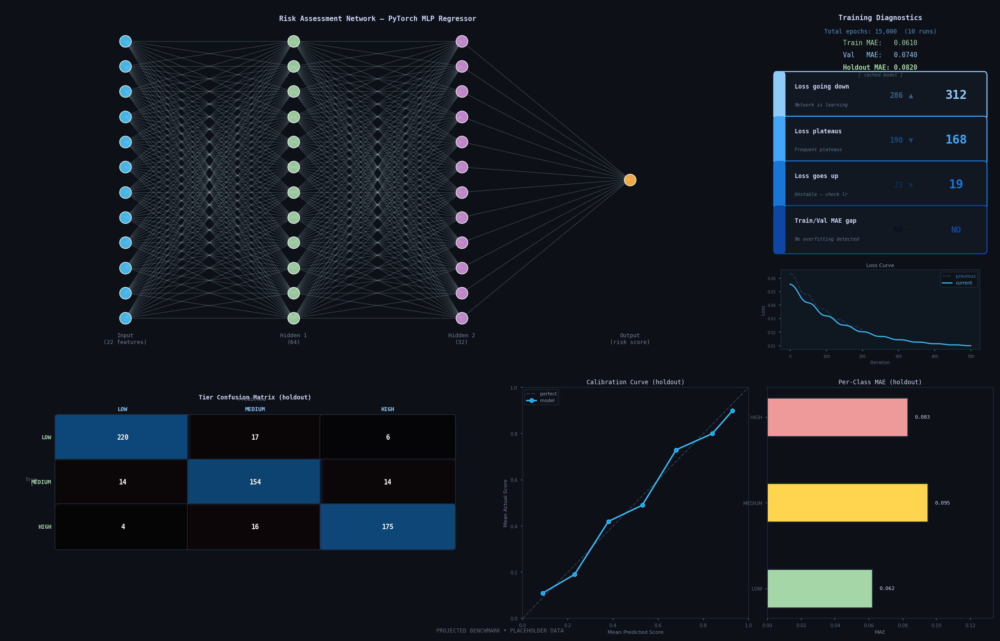
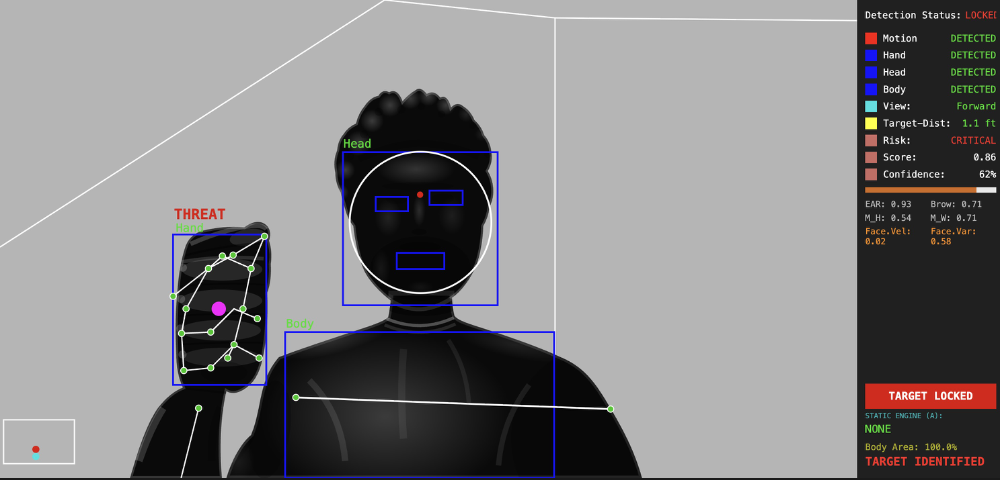

Neural Net Drone ID System
Neural Network-Coordinated Autonomous Drone Entry Team
An end-to-end autonomous UAV platform combining real-time camera input, onboard data analysis, and custom sensor fusion hardware for quick information transfer and post-op action.
 Fig. 01 — Flight Platform
Fig. 01 — Flight Platform
Overview
MotionTrack is a real-time behavioral analysis system that uses a live camera feed to track movement, facial expressions, gestures, posture, gaze, and proximity. It combines these signals to assess potential risk and display an immediate, easy-to-understand overview of a person’s behavior.
Technologies
Python OpenCV MediaPipe PyTorch scikit-learn NumPy Pandas FER Matplotlib Joblib Python threading and concurrent processing yt-dlp
Outcome
Achieved 89% behavioral risk-classification accuracy on unseen test participants across varied lighting, distances, poses, and backgrounds. The system maintained inference latency below 45 milliseconds while processing video at 30 FPS, enabling responsive four-tier risk assessment entirely on-device without cloud processing.


PyTorch risk-assessment network architecture with training diagnostics, calibration results, and per-class error analysis.
Design ProcessBuild Sequence
System Planning
Defined the behavioral signals, risk categories, performance targets, and real-time processing requirements for a camera-based assessment system.
Detection Pipeline
Built an OpenCV and MediaPipe pipeline to detect faces, hands, body pose, motion, gaze, gestures, and subject proximity from a live video feed.
Feature Engineering
Converted visual landmarks into 22 behavioral features covering facial geometry, movement, posture, approach, and temporal behavior.
Adaptive Calibration
Created a rolling calibration system that establishes a personalized baseline, reducing differences caused by individual appearance and resting posture.
Dataset Development
Collected, labeled, balanced, and validated behavioral samples across low-, medium-, and high-risk scenarios for model training.
Model Training
Developed and trained a PyTorch neural network to convert behavioral features into a continuous risk score and four interpretable risk tiers.
Real-Time Integration
Combined detection, inference, and visualization into a responsive application using asynchronous camera capture and background model processing.
Testing and Optimization
Evaluated accuracy, precision, recall, latency, calibration, and false-positive rates across varied people, environments, lighting conditions, and camera positions.
Performance ResultsValidated
Multi-Signal Behavior Tracking
22 Behavioral FeaturesMotionTrack converts live webcam input into a structured set of behavioral signals, including facial geometry, gaze direction, hand position, body pose, motion intensity, and subject proximity. These features allow the system to evaluate activity from multiple visual cues at once instead of relying on a single detection method.
Vision Input Processing
500+ Landmarks Tracked per FrameMotionTrack processes a live camera feed by extracting hundreds of facial, hand, and body landmarks from each frame before converting them into behavioral features for classification. This showcases the system’s real-time sensing layer: raw visual input is transformed into structured signals that the neural network can evaluate.
Sensor Fusion Software
Combining camera, depth, and ultrasonic readings gave the navigation system multiple ways to confirm nearby hazards. This sensor-fusion approach supported dependable obstacle detection across changing light levels and cluttered flight paths.
Autonomous Navigation Software
Navigation decisions remained onboard from perception through flight control. Removing dependence on a ground station reduced communication delay and allowed the drone to continue analyzing its surroundings and adjusting its route independently.